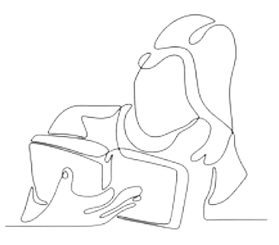

Beleza da Simplicidade
A gratidão nos convida a encontrar beleza nas pequenas coisas que muitas vezes passam despercebidas. O brilho do sol, o vento fresco em um dia quente ou o sorriso de um estranho na rua são lembretes de que há sempre algo pelo que ser grato. Quando cultivamos esse olhar, a vida se transforma, e começamos a perceber que, mesmo nos momentos mais difíceis, há razões para agradecer.
“A gratidão transforma o que temos em suficiente.”
O Poder Transformador da Gratidão
A gratidão tem o poder de transformar o ordinário em extraordinário. Quando reconhecemos e valorizamos as bênçãos em nossa vida, grandes ou pequenas, nossa perspectiva muda. Não importa quão caótica ou desafiadora seja a jornada, o simples ato de agradecer cria espaço para alegria e esperança.